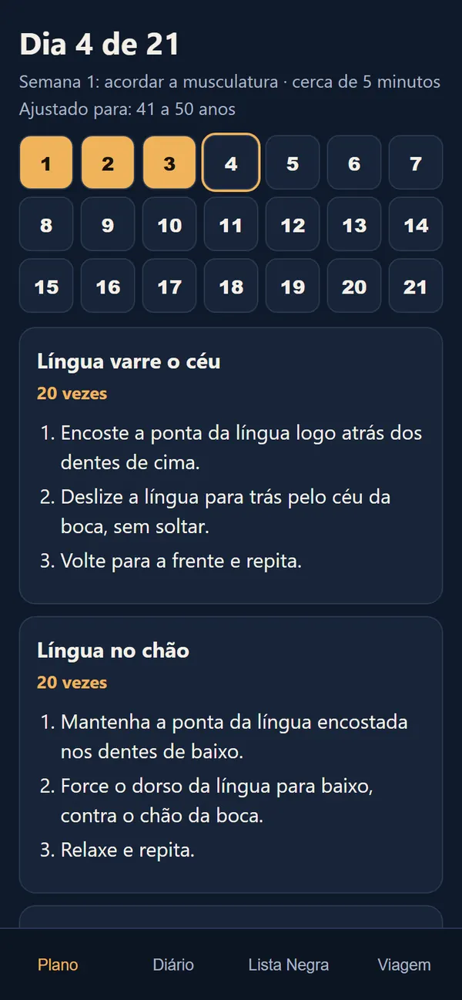
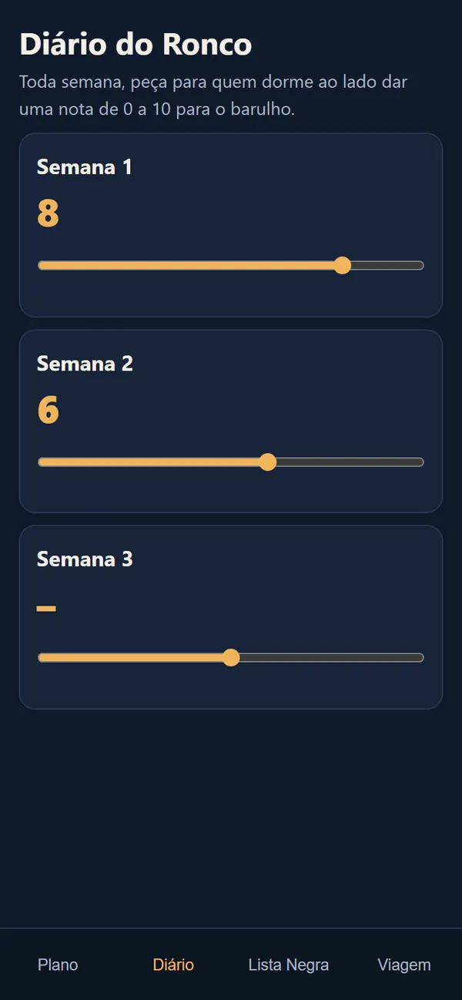
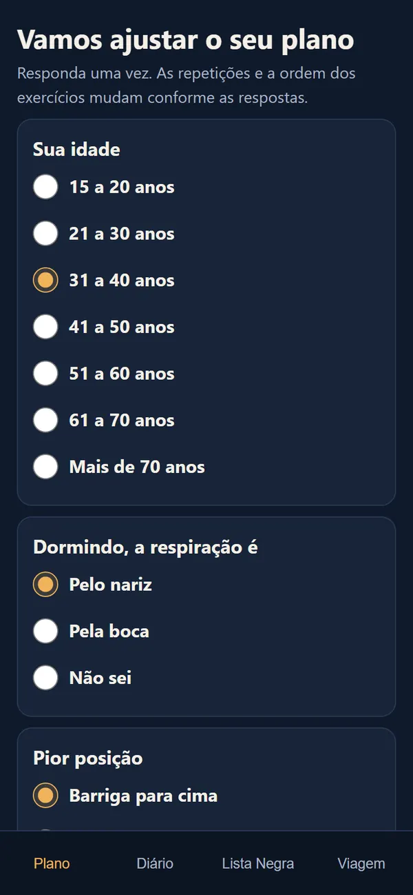
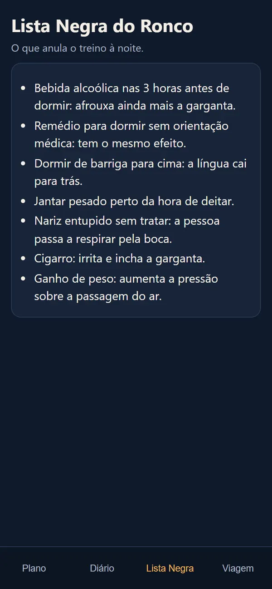
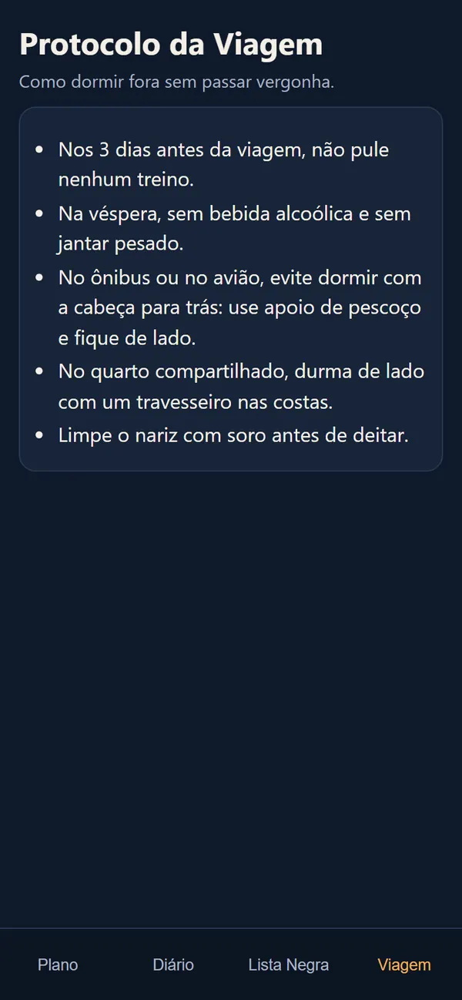

Bônus 1Lista Negra do Ronco
Os 7 hábitos que afrouxam a garganta à noite e atrapalham o treino. Alguns você faz hoje sem perceber, como jantar pesado perto da hora de deitar.
Exercícios cientificamente comprovados para diminuir o seu ronco. São 21 dias de treino, cinco minutos por noite, para deixar as suas noites cada vez mais silenciosas.
Chega de aparelho, cirurgias ou remédios malucos.
Seja para você ou para alguém que você conhece, as noites podem ser silenciosas.
Pagamento único, por Pix ou cartão.

Quem ronca pega no sono em cinco minutos. Quem dorme ao lado, não.
Primeiro cutucão. "Vira de lado." O barulho para por dez minutos.
De novo, e mais alto. Alguém pega o travesseiro e vai para o sofá.
Os dois acordam cansados. Só um sabe por quê.
Se essa noite parece com a sua, você já conhece o resto: o protetor de ouvido, a vergonha de cochilar no sofá na casa dos outros, o medo de dividir quarto em viagem e a cara de sono no dia seguinte.
Porque os músculos dela não são mais os mesmos. Durante o dia, eles seguram aberta a passagem do ar. Quando você dorme, eles afrouxam. A passagem fica estreita, o ar passa apertado e a garganta inteira vibra. É esse o barulho.
Com o tempo, essa musculatura fica mais mole, e o ronco aumenta. Não é destino e não é frescura de quem reclama. É músculo.
Travesseiro, adesivo e protetor tentam segurar o barulho por uma noite. Nenhum deles mexe no músculo.
| O que conta | Travesseiro | Adesivo nasal | Noite Silenciosa |
|---|---|---|---|
| Treina a musculatura da garganta | ✕ | ✕ | ✓ |
| Nada no nariz ou na boca para dormir | ✓ | ✕ | ✓ |
| Vai junto em qualquer viagem | ✕ | ✓ | ✓ |
| Paga uma vez só | ✓ | ✕ | ✓ |
O Noite Silenciosa é um plano de 21 dias com 8 exercícios de língua, céu da boca e bochecha. Você faz em cerca de cinco minutos, antes de dormir, seguindo o passo a passo na tela do celular.
E o treino não é igual para todo mundo. Quem tem 35 anos começa com um número de repetições, quem tem 65 começa com outro. O plano também muda a ordem dos exercícios conforme o jeito que você respira dormindo e a posição em que o ronco piora.
O objetivo é simples: a musculatura ficar firme o bastante para não fechar a passagem do ar quando você dorme. Na prática, é isso que você busca:
Cinco minutos, sem aparelho, sem nada no nariz e sem precisar sair de casa. Na segunda e na terceira semana entram exercícios novos e as repetições aumentam, sem você ter que pensar em nada. Você só abre o plano e segue.

Mesma cama, viagem com a família, quarto dividido no hotel, cochilo depois do almoço. É para isso que o treino existe. E você não precisa confiar na própria impressão: quem dorme ao lado dá a nota do barulho toda semana.
E você para de ser o motivo da noite mal dormida de quem você ama.
Quem ronca carrega uma culpa que ninguém vê. Treinar a garganta é fazer a sua parte, todo dia, em cinco minutos.
O aplicativo abre direto no navegador do celular, sem baixar nada. O treino do dia já está lá, com tudo o que você precisa.



Acordar a musculatura
Ganhar força
Fixar o hábito
Todos os dias, nas refeições: mastigar dos dois lados da boca. As repetições sobem um pouco a cada semana.
Os 7 hábitos que afrouxam a garganta à noite e atrapalham o treino. Alguns você faz hoje sem perceber, como jantar pesado perto da hora de deitar.
5 cuidados para dormir fora de casa sem ser o barulho do quarto: nos dias antes da viagem, no ônibus ou no avião e no quarto dividido.
Quem dorme ao lado dá uma nota de 0 a 10 para o barulho, semana a semana. Você enxerga a diferença sem depender da sua impressão.
É exatamente assim que ele aparece no seu celular. Leva menos de um minuto.
Sentiu a língua trabalhar? É esse o tipo de esforço que o plano repete todos os dias, com mais exercícios a cada semana.
No plano, as repetições mudam com a idade. Até 50 anos, este exercício começa com 20 vezes. Acima disso, começa com menos e sobe aos poucos.
A diferença começa no que você faz toda noite.
Se você procura um milagre sem fazer nada, este plano não é para você. Aqui tem treino.
Mas se você topa cinco minutos por noite para parar de ser o barulho da casa, é aqui que começa.
Sem mensalidade e sem cobrança escondida. Você paga uma vez e o plano fica com você.
Você paga uma vezR$ 37
Plano de 21 dias + Lista Negra do Ronco + Protocolo da Viagem + Diário do Ronco
R$ 37Pagamento único. Sem mensalidade.
Quero o aplicativo por R$ 37Pagamento único, por Pix ou cartão de crédito.
Compra em ambiente seguro, processada pela Wiapy.
Esta condição vale até a data definida.
Se você não gostar, não quiser fazer ou não funcionar para você, devolvemos 100% do seu dinheiro e ainda te mandamos R$ 100 no Pix. Sem pergunta e sem burocracia.
O plano trabalha a causa mais comum do ronco: a musculatura que afrouxa durante o sono. Quanto mais tempo de ronco, mais importante é manter o treino todos os dias. O resultado varia de pessoa para pessoa, e é por isso que existe a garantia de 120 dias.
Não. Você usa a boca, a língua e cerca de cinco minutos. O único item opcional é um balão de festa, para um dos exercícios da terceira semana.
Cerca de cinco minutos. Dá para fazer no banheiro, antes de escovar os dentes, ou sentado na cama.
Varia. No estudo da revista Chest, o ronco foi medido depois de 3 meses de exercícios diários. Os 21 dias do plano servem para criar o hábito. Quanto mais tempo você mantiver, melhor.
O plano ajusta as repetições para cada faixa de idade, dos 15 anos em diante. Ronco em criança precisa ser avaliado por um pediatra.
Pausas na respiração, engasgos durante o sono ou muito sono durante o dia podem ser apneia, que precisa de avaliação médica. Os exercícios não substituem o tratamento. Fale com o seu médico antes de começar.
Só para dar a nota do barulho no Diário do Ronco, uma vez por semana. Leva um minuto.
Logo depois do pagamento chega um e-mail com o link do plano. Ele abre no navegador do celular, sem instalar nada. No Pix, a aprovação é na hora.
Não. Você paga R$ 37 uma vez só e o plano fica com você.
Você tem 120 dias a partir da compra. Se não gostar, não quiser fazer ou não funcionar, manda um e-mail para rmsolucoesdigitais2027@gmail.com com a sua chave Pix. Você recebe todo o valor de volta e mais R$ 100 no Pix.
Cinco minutos hoje à noite. 21 dias para virar hábito. 120 dias de garantia para decidir.
Pagamento único, por Pix ou cartão.